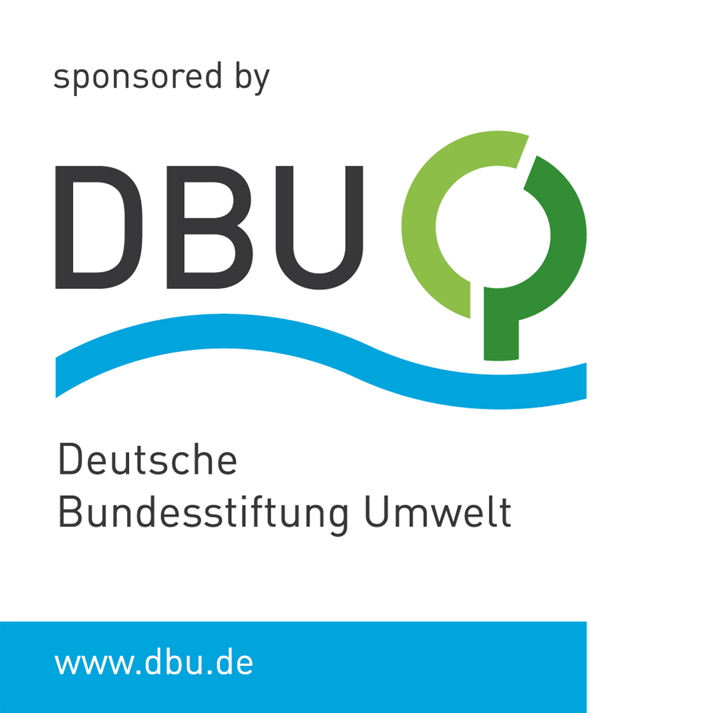

Research project
Tools to support Microfinance Institutions
Tools to support Microfinance Institutions
to assess
and manage
Climate- and Biodiversity-related Risks and Opportunities
An initiative gathering relevant resources, available open data, practical tools, and best practices to support microfinance institutions in understanding and managing risks related to climate and biodiversity. Implemented by HEDERA Sustainable Solutions with the financial support of the Deutsche Bundesstiftung Umwelt (DBU).
About the project
Climate change and biodiversity loss affect vulnerable populations, threatening livelihoods, access to basic services, and economic stability. These impacts are particularly severe in rural and remote areas, where communities often depend directly on natural resources and have limited capacity to adapt. In these contexts, microfinance institutions (MFIs) play a central role by providing loans and financial services to people and small businesses without access to traditional banks. Green inclusive finance builds on this role by promoting financial products that support climate change adaptation and mitigation, strengthen the resilience of vulnerable populations, as well as non-financial practices such as awareness-raising activities for clients and communities. Despite their importance, many MFIs are not yet adequately prepared to assess climate- and biodiversity-related risks.
Existing tools are fragmented and mostly designed for large commercial financial institutions, hence not suitable to be applied to the realities of the microfinance sector. As a result, risks are often underestimated, mitigation strategies remain weak, and opportunities to develop resilient and sustainable financial products are missed.
This situation exposes MFIs to climate-related loan defaults, higher operational costs, and threats to their own financial stability. It also limits the effective use of support from investors and development programs, for which the assessment, monitoring, and reporting of climate- and biodiversity-related risks have become a key component.
The project aims to develop a practical framework and digital tools for the assessment of climate- and biodiversity-related risks tailored to the microfinance sector. It addresses both internal risks (institutional practices and operations) and external risks (activities financed through loan portfolios and their impacts on communities). Key goals include strengthening MFIs’ capacity to manage climate risks and improving transparency for impact investors.
The implementation will consider different directions. An initial research will provide a review of existing climate risk methodologies, available datasets, and existing practices in the context of microfinance. The results will be used to develop and validate assessment questionnaires and digital tools, implementing these tools with selected MFIs. The material will also serve for the provision of dedicated workshops with partner institutions.
Existing tools are fragmented and mostly designed for large commercial financial institutions, hence not suitable to be applied to the realities of the microfinance sector. As a result, risks are often underestimated, mitigation strategies remain weak, and opportunities to develop resilient and sustainable financial products are missed.
This situation exposes MFIs to climate-related loan defaults, higher operational costs, and threats to their own financial stability. It also limits the effective use of support from investors and development programs, for which the assessment, monitoring, and reporting of climate- and biodiversity-related risks have become a key component.
The project aims to develop a practical framework and digital tools for the assessment of climate- and biodiversity-related risks tailored to the microfinance sector. It addresses both internal risks (institutional practices and operations) and external risks (activities financed through loan portfolios and their impacts on communities). Key goals include strengthening MFIs’ capacity to manage climate risks and improving transparency for impact investors.
The implementation will consider different directions. An initial research will provide a review of existing climate risk methodologies, available datasets, and existing practices in the context of microfinance. The results will be used to develop and validate assessment questionnaires and digital tools, implementing these tools with selected MFIs. The material will also serve for the provision of dedicated workshops with partner institutions.
Objective and expected results
- Provide findable and practical resources related to climate- and biodiversity-risk assessment for microfinance practitioners
- Develop open-source digital tools for managing climate-related risks, aligned with existing standards and adapted to the sector's needs
- Pilot testing of the tools with selected microfinance institutions
- Training material and initial training events for practitioners
Explore the hub
Project Partners
Project implementation in collaboration with:
Contact us if you are interested in collaborating in the framework of this initiative
Funded by the Deutsche Bundesstiftung Umwelt (DBU)
